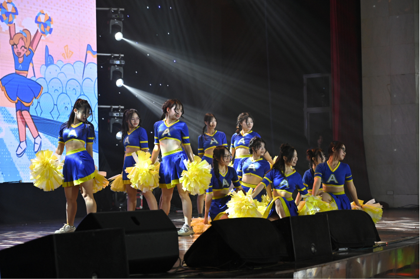
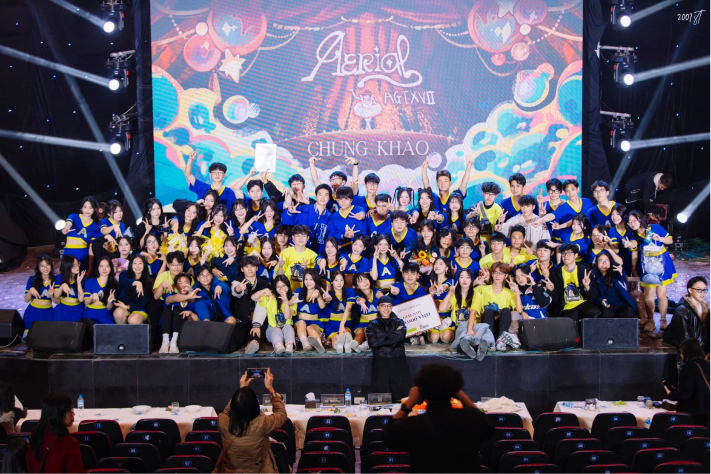
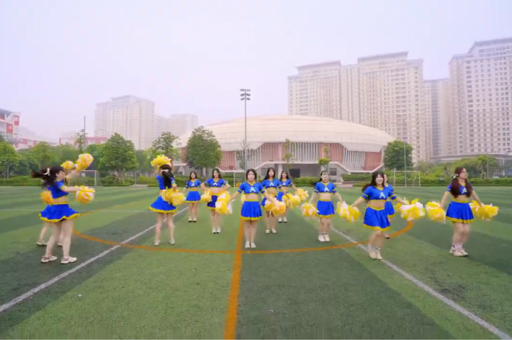
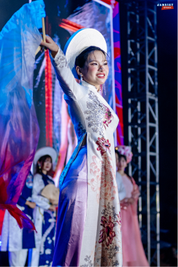
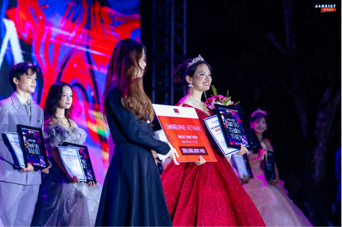
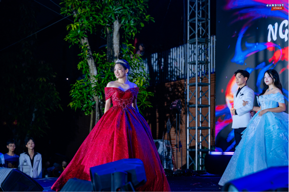

Dance & Performance.
Dance, for me, is the physical translation of thought and rhythm. Whether exploring sharp contemporary movements or dynamic cheer choreography, I use it as a visceral language to tell stories, break boundaries, and express what words cannot.
Cheer Ams
As a proud member of Hanoi-Amsterdam’s cheerleading squad, dance became my ultimate outlet for teamwork and school spirit, teaching me resilience and how to command a crowd through movement


Ams Got Talent Performance

Cheer up Music Video
Ams Ambassador
Earning my spot as the runner-up in Ams Ambassador 2025 was a rewarding journey, celebrating the dynamic intellect, versatility and spirit of the student community.


